Измерительный преобразователь
Измерительный преобразователь(ИП) - техническое средство, имеющее метрологические характеристики, предназначенное для преобразования физической величины в другую физическую величину или измерительный сигнал, удобный для обработки/хранения/передачи/индикации.
В общем виде представляет собой устройство, имеющее энергетические входы и выходы. На вход подобного устройства поступает измеряемая физическая величина, характеризующая измеряемый объект. В идеальном случае она изменяется по закону 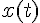, где t - время условного начала отсчёта.
В данном случае функция преобразования имеет вид 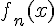
В реальном случае функция преобразования имеет вид 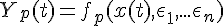
Большинство физических эффектов используемых для измерения физических величин имеют весьма низкое соотношение между величиной входного и выходного параметров. Это возникает в связи тем, что энергия, передающая информацию, составляет незначительную часть от общей энергии преобразования. Малая мощность носителя измерительного сигнала вынуждает применять различные варианты его усиления.
С технической точки зрения наиболее гибкими и универсальными являются электронные устройства. По характеру измерения ИП делятся на аналоговые, цифро-аналоговые и аналогово-цифровые. В 1 семестре 2-го курса мы изучаем только аналоговые преобразователи.
Измерительный преобразователь на базе операционного усилителя
Операционный усилитель(ОУ) представляет собой основной после транзистора элемент для построения аналооговых схем.
С помощью ОУ легко реализуются задачи усиления сигнала, изоляции нагрузки, инвертирования/сложения/вычитания/умножения сигнала и многие другие, которые нам не назвали, но их и правда много.
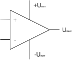
Функция преобразования ОУ в общем виде выглядит так: 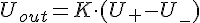, где
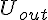 - выходное напряжения
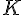 - коэффициент усиления
- напряжение не инвертирующего входа (там где плюсик)
- напряжения инвертирующего входа (там где минусик)
Инвертирующий усилитель
Два правила расчёта схем на операционных усилителях:
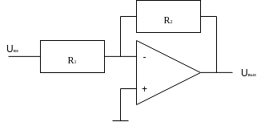
Функция преобразования:
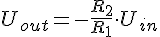, где 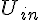 - напряжение на входе
В данном случае коэффициент усиления будет
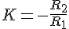
Неинвертирующий усилитель
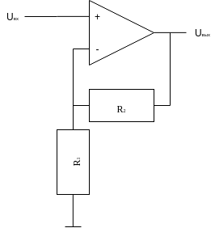
Функция преобразования:
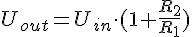
Коэффициент усиления:
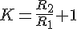
Дифферинциальный усилитель
Схема вычитания
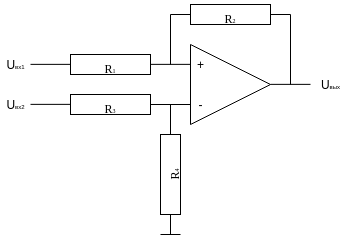
В общем случае, Функция преобразования
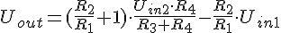
В случае если 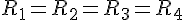
Функция преобразования
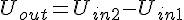
В случае если
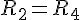 и 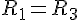
Функция преобразования
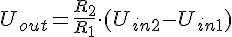
Суммирующий усилитель
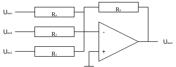
Функция преобразования:
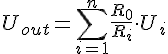
Схема интегратора на ОУ
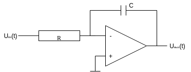
Функция преобразования:
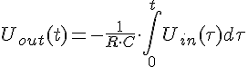